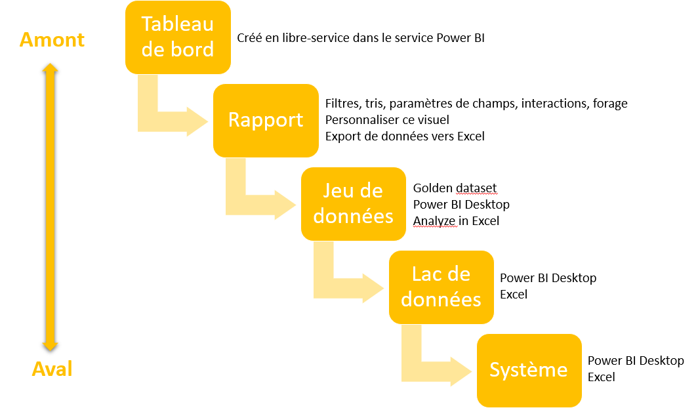

Maximisez la valeur de vos outils libre service dans Power BI
Power BI promet de démocratiser l'utilisation de l'intelligence d'affaires à tous les niveaux de l'entreprise grâce à ses fonctionnalités de libre-service. Chaque conseiller peut désormais considérer remplacer Excel par Power BI afin de supporter de meilleures prises de décisions. Est-ce que Power BI livre la valeur promise?
Mais au fait, qu'est ce que le libre-service?
Tous les outils informatiques modernes, BI ou non, proposent une forme de libre-service. Il est donc fréquent que les organisations n'arrivent pas à l'encadrer de manière cohérente.
Le libre service peut s'effectuer à plusieurs étapes de transformation des données :
Système : En se connectant sur un CRM ou un ERP. Cette étape est la plus en aval de la chaine de transformation.
Lac de données : En se connectant sur une base de données ou un outil Microsoft Fabric.
Jeu de données Power BI : En se connectant sur un jeu de données partagé, souvent appelé golden dataset.
Rapport Power BI sur le service : En utilisant un rapport polyvalent et flexible comprenant des fonctionnalités permettant le libre-service, telles que les filtres, les paramètres de champ, l'extraction des données (forage) et les interactions.
Tableau de bord : Épingler des visuels sur un tableau de bord à partir de rapports officiels mis à sa disposition. Cette étape est la plus en amont de la chaine de transformation.

Pour savoir à quel niveau effectuer le libre-service, la maxime suivant, de mon cru, peut être utilisé :
Le libre service doit se faire le plus en amont que possible et aussi loin en aval que nécessaire.
Si plusieurs utilisateurs ont besoins des données d'un même système, il faut considérer leur offrir un lac de données ou un jeu de données en mode libre-service. Si un cadre veut qu'un indicateur soit suivi dans toute son organisation, il faut considérer créer un rapport officiel. Le libre-service ultime consiste à laisser chaque équipe se bâtir un tableau de bord équilibré avec des indicateurs provenant de plusieurs rapports officiels. Les efforts de paramétrage y sont minimes, les premières décisions s'y prennent rapidement et la satisfaction y est maximale. Telles sont les promesses du BI.
Les analyses non récurrentes ne demanderont ni rapport officiel, ni de tableaux de bord. Certaines analyses faites avec des données sensibles ne seront mêmes pas publié sur le service Power BI. Dans ces cas, le libre service peut se faire en aval.
Positionner le libre-service au mauvais endroit peut avoir des conséquences désastreuses. Imaginez une équipe d'analystes financier ou chacun se connecte sur un lac de données SIF afin de créer sa variante d'un rapport financier. Les efforts de développement sont multipliés, le risque d'erreurs est grand et les chances que les indicateurs soient interprétés de la même façon est faible. Ce genre de libre service sera coûteux et n'arrivera pas à satisfaire ses clients.
En conclusion, la maxime du libre-service dans Power BI aide à identifier la façon dont le libre service doit être exécuté afin de maximiser sa valeur. Elle encourage la création et la réutilisation d'outils sophistiqués et plus robustes. Power BI deviendra alors un véritable actif numérique plutôt qu'un simple successeur d'Excel.